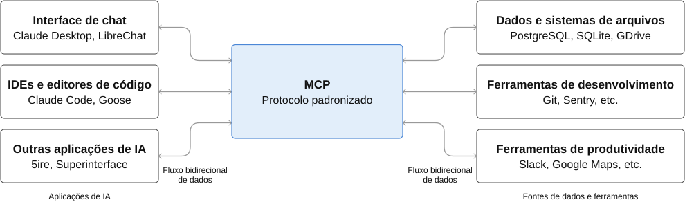
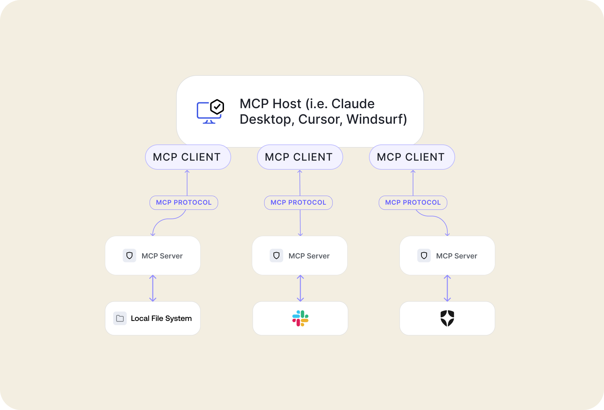

Workshop
Conversando com sua
API em Laravel
direto do prompt
Vinícius Campitelli
Sobre
Sobre
Campitelli
- Bacharel em Ciência da Computação pela UFSCar
- Desenvolvedor há 20 anos
- Membro do PHPSP
- Entusiasta em cibersegurança
- Consultor de TI e instrutor de treinamentos
Slides
github.com/vcampitelli/workshop-mcp-laravel
O que é MCP?
O que é MCP?
Model Context Protocol é um protocolo projetado para fornecer uma maneira estruturada para LLMs interagirem com serviços externos, permitindo acessar e executar tarefas
Model Context ProtocolO que é MCP?

Model Context ProtocolArquitetura
Arquitetura

Auth0: An Introduction to MCP and AuthorizationArquitetura
Servidor MCP
Programa que expõe funcionalidades para os agentes através do protocolo MCP, disponibilizando endpoints via HTTP streaming ou stdio
Exemplos: servidor de sistemas de arquivos para acesso a documentos, servidor de banco de dados para executar queries, servidor com integração ao Slack
Arquitetura
Cliente MCP
Aplicação que se conecta e interage com um servidor MCP através dos protocolos de transporte
Understanding MCP clientsArquitetura
Host MCP
Um agente que coordena os clientes MCP e integra com os modelos de LLM
Exemplos: Claude Desktop, sua IDE de desenvolvimento ou alguma ferramenta CLI
Componentes
Componentes
Prompts
Um prompt pronto que pode ser facilmente acessado e executado pelos usuários, podendo ser configurado via parâmetros
Exemplo: “Qual a temperatura atual em <cidade>?” com o argumento
cidade
Componentes
Tools
Uma função disponibilizada pelo servidor MCP para auxiliar na interação com os modelos, como se fosse um endpoint em uma API
Exemplos: buscar temperatura; enviar mensagem no Slack; listar produtos; enviar email
Componentes
Resources
Conjuntos de dados e informações que podem ser compartilhadas para dar contexto às LLMs
Exemplos: schemas do banco de dados, guidelines do sistema
Mãos na Massa
Mãos na Massa
-
Em sua aplicação Laravel, instale o pacote
laravel/mcp:$ composer require laravel/mcp -
Crie o servidor e seus componentes com os comandos:
$ php artisan make:mcp-server $ php artisan make:mcp-tool $ php artisan make:mcp-prompt $ php artisan make:mcp-resource
Mãos na Massa
-
Teste seu servidor com o Inspector:
$ npx @modelcontextprotocol/inspector localhost:8000 -
Configure seu agente de IA e adicione o servidor MCP criado
-
Exemplo com Claude:
$ claude mcp add \ --transport http \ orders \ http://localhost:8000/mcp/orders
-
Exemplo com Claude:
Mãos na Massa
-
Configure seu agente de IA e adicione o servidor MCP criado
-
Exemplo com Ollama e
fast-agent:
fastagent.config.yamldefault_model: "generic.llama3.1:8b-instruct-q8_0" generic: api_key: "ollama" base_url: "http://localhost:11434/v1" mcp: servers: orders: transport: "http" url: "http://localhost:8000/mcp/orders"$ fast-agent go --servers orders
-
Exemplo com Ollama e
fast-agent:
Mãos na Massa
Schemas
Schemas
Argumentos da tool
use Illuminate\Contracts\JsonSchema\JsonSchema;
public function schema(JsonSchema $schema): array
{
return [
'status' => $schema->string()
->description('Status dos pedidos')
->enum(['pending', 'paid'])
->required(),
];
}Contrato de entrada
string(): tipodescription(): contextoenum(): opçõesrequired(): obrigatório
Schemas
Validação no servidor
// Dentro de handle(Request $request)
$input = $request->validate([
'status' => ['required', 'in:pending,paid'],
], [
'status.in' => 'Use pending ou paid para filtrar os pedidos.',
]);Schemas
Resultado estruturado
public function outputSchema(JsonSchema $schema): array
{
return ['total' => $schema->integer()->required()];
}// Dentro de handle(Request $request)
return Response::structured([
'total' => Order::count(),
]);Exemplo de saída: {"total": 42}. O cliente recebe campos previsíveis.
Autenticação
Autenticação
Acesso ao servidor web
Sanctum
Bearer token configurado no cliente.
Exemplo: integração interna da loja.
Passport
OAuth 2.1 com autorização do usuário.
Exemplo: conectar a loja a um agente externo.
Confira o mecanismo aceito pelo cliente MCP antes de escolher.
Autenticação
Sanctum
routes/ai.phpuse App\Mcp\Servers\OrdersServer;
use Laravel\Mcp\Facades\Mcp;
Mcp::web('/mcp/orders', OrdersServer::class)
->middleware('auth:sanctum');Authorization: Bearer <token>O token identifica o usuário em cada requisição.
Autenticação
Passport / OAuth 2.1
routes/ai.phpuse App\Mcp\Servers\OrdersServer;
use Laravel\Mcp\Facades\Mcp;
Mcp::oauthRoutes();
Mcp::web('/mcp/orders', OrdersServer::class)
->middleware('auth:api');Pré-requisito: Passport instalado, guard e chaves configurados. Configure também a view de autorização indicada na documentação.
Autenticação
Permissão para executar
// Dentro de handle(Request $request)
if (! $request->user()->can('viewAny', Order::class)) {
return Response::error('Sem permissão para listar pedidos.');
}
// Consulte apenas os pedidos permitidos para esse usuário.Autenticação
Quem está fazendo a chamada?
Autorização
Quais pedidos pode consultar?
Streaming de respostas
Streaming de respostas
Atualizações durante a execução
public function handle(Request $request): \Generator
{
yield Response::notification('processing/progress', [
'current' => 0, 'total' => 1,
]);
// Consulte os pedidos e monte o relatório aqui.
yield Response::text('Relatório concluído.');
}Streaming de respostas
Generator + yield
Na tool
handle(): \Generatoryieldemite mensagens- Notificações e resultados
No servidor web
- Stream SSE automático
- Eventos ao longo da execução
- Cliente processa as mensagens
Use para operações demoradas, como consolidar milhares de pedidos.
Apps
Apps
Interface dentro do host
Exemplo: um painel de pedidos com filtros e tabela no chat.
O host precisa oferecer suporte a MCP Apps.
Apps
AppResource e Blade
php artisan make:mcp-app-resource OrdersDashboardAppuse Laravel\Mcp\Server\AppResource;
use Laravel\Mcp\Request;
use Laravel\Mcp\Response;
class OrdersDashboardApp extends AppResource
{
public function handle(Request $request): Response
{
return Response::view('mcp.orders-dashboard-app');
}
}Registre OrdersDashboardApp::class em $resources do servidor.
Apps
Vinculando a tool à interface
use App\Mcp\Resources\OrdersDashboardApp;
use Laravel\Mcp\Server\Attributes\RendersApp;
#[RendersApp(resource: OrdersDashboardApp::class)]
class ShowOrdersDashboard extends Tool
{
public function handle(Request $request): Response
{
return Response::text('Painel de pedidos carregado.');
}
}Registre a tool em $tools. Imports usuais de Tool, Request e Response omitidos.
Apps
Chamando uma tool pela interface
resources/views/mcp/orders-dashboard-app.blade.php<x-mcp::app title="Pedidos">
<x-slot:head>
<script type="module">
createMcpApp(async (app) => {
document.querySelector('#load').onclick = async () => {
const result = await app.callServerTool('list-orders', {});
document.querySelector('#orders').textContent =
JSON.stringify(result.structuredContent);
};
});
</script>
</x-slot:head>
<button id="load">Carregar pedidos</button>
<pre id="orders"></pre>
</x-mcp::app>Laravel MCP: Creating App ResourcesTestes
Testes
MCP Inspector
php artisan mcp:inspector mcp/orders- Conectar e conferir autenticação
- Descobrir tools, prompts e resources
- Enviar argumentos e inspecionar respostas
Servidor protegido? Informe o header Authorization no Inspector.
Testes
Teste automatizado com Pest
tests/Feature/Mcp/OrdersTest.phpuse App\Mcp\Servers\OrdersServer;
use App\Mcp\Tools\FindStatusId;
use App\Models\OrderStatus;
it('encontra o status de um pedido', function () {
$status = OrderStatus::factory()->create(['name' => 'Pago']);
OrdersServer::tool(FindStatusId::class, ['name' => 'Pago'])
->assertOk()
->assertSee((string) $status->id);
});Use RefreshDatabase nos testes com banco e prepare os dados de cada cenário.
Testes
Cenários de acesso e erro
// Chamada autenticada:
OrdersServer::actingAs($user)
->tool(ListOrders::class, [])
->assertOk();
// Em outro teste, com um status inexistente:
OrdersServer::tool(FindStatusId::class, ['name' => 'inexistente'])
->assertHasErrors(['Status não encontrado.']);- Verifique argumentos inválidos e acesso negado
- Confira o isolamento dos dados por usuário
Teste o middleware via HTTP: actingAs() na tool não verifica OAuth.
Referências
Referências
Treinamentos in company